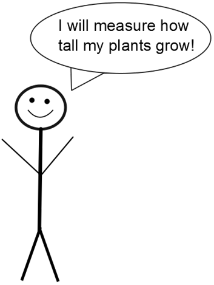

Dependent Variable
Height of the Plants
: The height of the plants (according to your hypothesis) will change
depending
on which fertilizer you use. Because this variable
depends
on another variable it is a
Dependent Variable
.

Go Back
Continue Learning